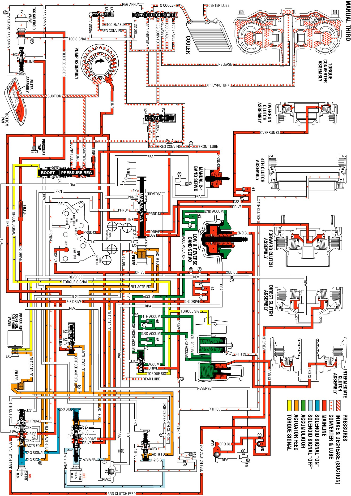

Manual Third Gear
Manual Third Gear
Manual Third can be used in order to increase the performance of the vehicle by allowing higher engine RPM for more torque. Manual Third will also provide vehicle engine compression braking when descending slight grades. Manual Third can be selected at any vehicle speed. The transmission will downshift into third gear at any vehicle speed.
Manual Valve
In the Manual Third range, line pressure from the pressure regulator valve is converted into PRND43, Drive, and D321 pressures. The PRND43 fluid pressure is directed to the TFP manual valve position switch and to the manual 2-1 band servo. The Drive fluid pressure is directed to the TFP manual valve position switch, the forward clutch, the 1-2 shift valve, and the accumulator valve. The D321 fluid pressure is directed to the #1 checkball and to the overrun clutch.
Automatic Transmission Fluid Pressure (TFP) Manual Valve Position Switch Assembly
Drive and PRND43 fluid pressures from the manual valve are directed to the DR and the PRND43 switches on the TFP manual valve position switch. This sends a signal to the PCM that the transmission is in manual third.
1-2 Shift Solenoid (1-2 SS) Valve
When the 1-2 SS valve de-energizes, 1-2 signal fluid pressure exhausts through the solenoid. This allows spring pressure to move the 3-4 shift valve to the extreme right.
2-3 Shift Solenoid (2-3 SS) Valve
When the 2-3 SS valve energizes, the 2-3 signal fluid pressure moves the 2-3 shift valve against the spring force to the extreme left.
1-2 Shift Valve
Spring pressure and 2-3 signal fluid hold the 1-2 shift valve to the extreme right. Drive fluid pressure from the manual valve is changed into 2-3 drive fluid pressure at the 1-2 shift valve. This pressure is directed to the 2-3 shift valve, the TCC PWM solenoid valve, and the intermediate (second) clutch.
2-3 Shift Valve
The 2-3 fluid pressure from the 1-2 shift valve is changed into Third Clutch fluid pressure at the 2-3 shift valve. This fluid seats the #8 checkball, causing the fluid to flow through an orifice, and toward the third accumulator. Third clutch fluid pressure also seats the #11 checkball, causing the fluid to flow through an orifice and toward the third clutch. Third clutch fluid pressure changes into Third/Reverse fluid pressure at the orifice.
Low and Reverse Band Servo
Second fluid pressure is supplied to the low and reverse band servo in the same manner as to the second clutch. This fluid pressure is directed to the inner piston of the low and reverse band servo, which applies the inner piston.
Manual 2-1 Band Servo
The PRND43 fluid pressure from the manual valve is directed to the manual 2-1 band servo. This pressure and the force of the spring hold the manual 2-1 band servo off.
Overrun Clutch
The D321 fluid pressure from the manual valve seats the #1 checkball in the case. This causes the fluid to flow through an orifice, where the D321 fluid pressure changes into overrun fluid pressure. The overrun fluid pressure flows through the case and the pump housing, and into the overrun clutch housing, which applies the overrun clutch. The overdrive roller clutch becomes ineffective and provides vehicle engine compression braking.
Forward Clutch
Drive fluid pressure from the manual valve applies the forward clutch.
Direct Clutch
Third/Reverse pressure from the #11 checkball flows through the case and into the center support in order to apply the inner piston area of the direct clutch.
Intermediate (Second) Clutch
The Intermediate (Second) Clutch is applied by second fluid pressure from the 1-2 shift valve. The 2-3 drive fluid pressure from the 1-2 shift valve seats the #4 checkball in the case, causing the fluid to flow through two orifices. The 2-3 drive fluid pressure changes to Second apply fluid pressure at the orifices. The Second apply fluid flows into the center support, which applies the intermediate (second) clutch.
Third Clutch Accumulator
Third clutch fluid pressure is also applied to the third clutch accumulator, which is encased in the accumulator housing. This moves the third accumulator piston against the spring force and the accumulator pressure, which smooths the 2-3 shift.
Torque Converter Clutch Pulse Width Modulated (TCC PWM) Solenoid Valve
When the PCM signal energizes the TCC PWM solenoid valve, the pressure shifts the converter clutch shift valve, which applies the TCC solenoid valve. The signal pressure also acts on the torque converter clutch regulator valve. This regulates the output pressure in order to control the apply and the release of the TCC.
Manual Third Gear - TCC Applied
